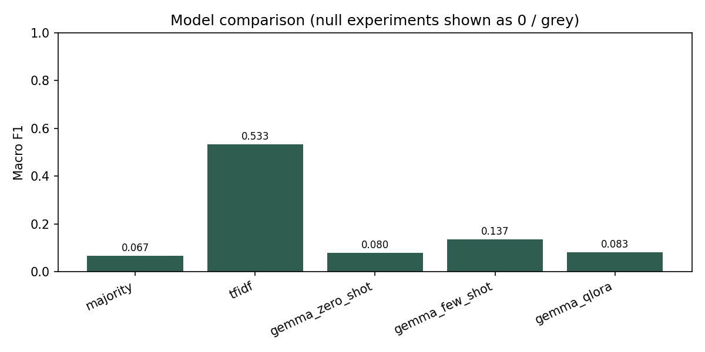
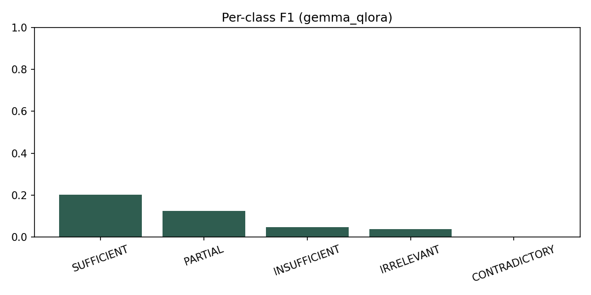
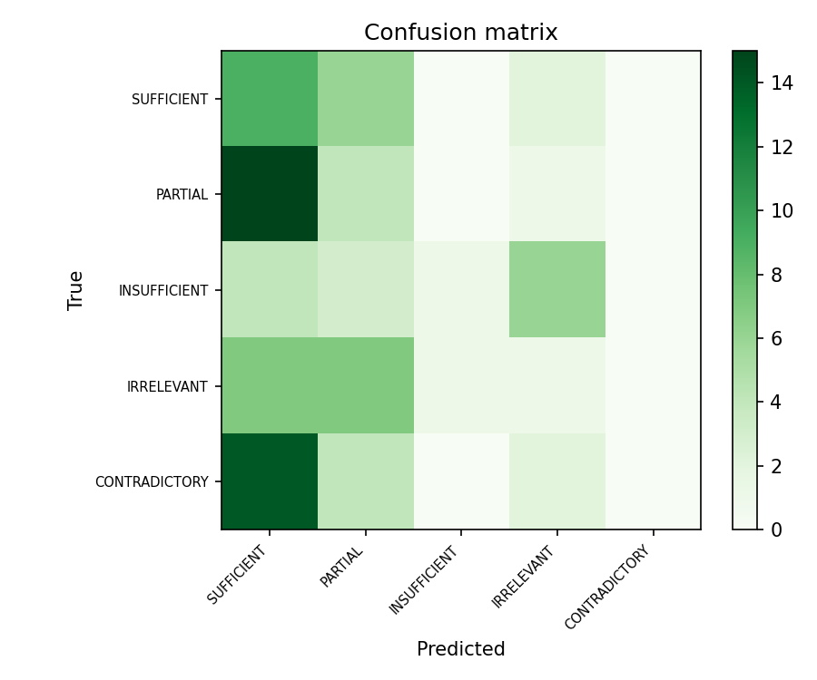
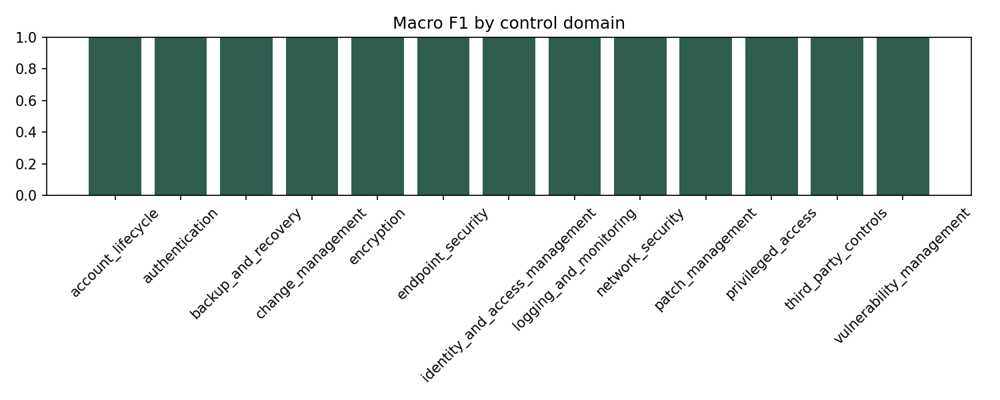
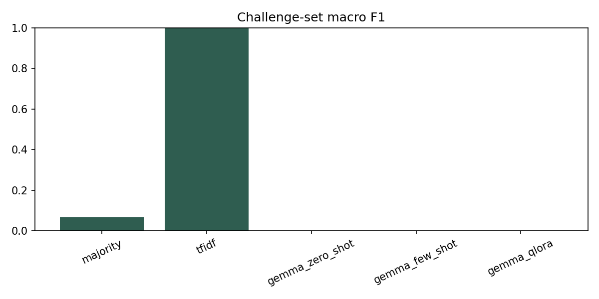

Model ladder on one sealed benchmark
Primary metric is macro F1. Challenge scores test generalization to held-out scenario families. Pending means the experiment JSON has not been written yet.
Test macro F1
Full comparison
| Experiment | Model | Test macro F1 | Accuracy | Challenge macro F1 |
|---|
Figures from committed artifacts
Charts are generated by scripts/build_figures.py from result files.
Grey or placeholder panels mean the underlying LLM run has not landed.






How to read this
- TF-IDF is a dataset integrity check Extremely high lexical scores warn that the benchmark may contain shortcuts. Gate 1 forced a generator harden pass before protocol seal.
-
Gemma ladder is published
Zero-shot, few-shot, and QLoRA TEST macro F1 live in
results/and on this page — no invented scores. - Challenge < test is expected signal Harder families and defects should hurt. That is part of the research design.